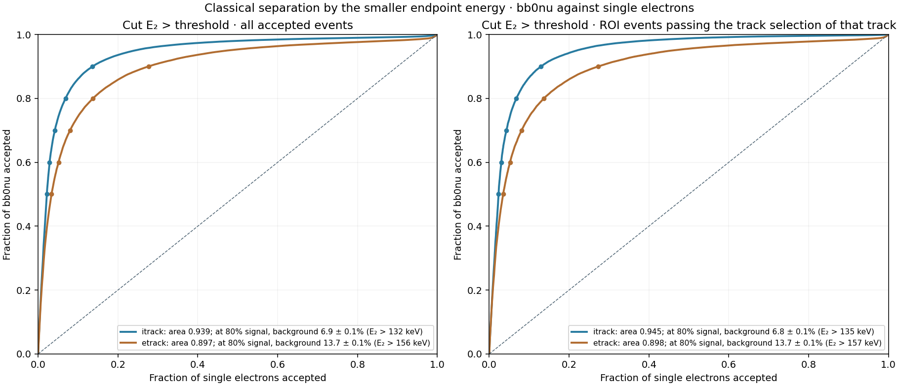
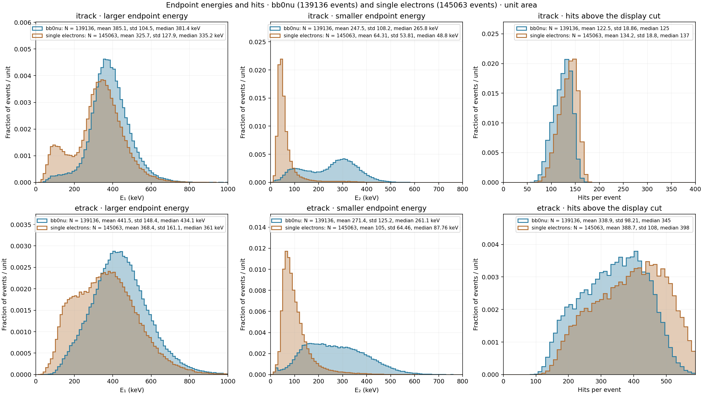
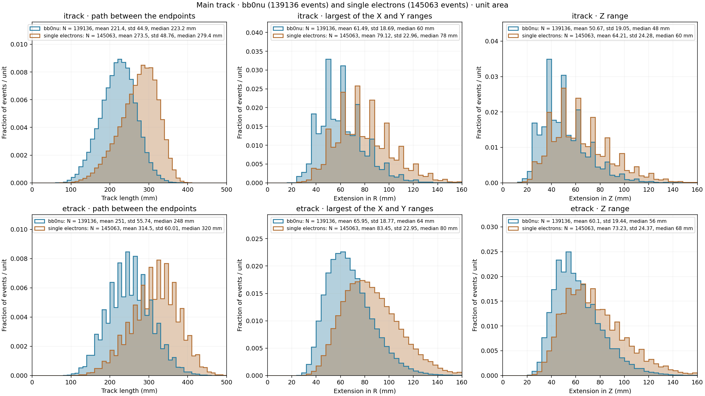
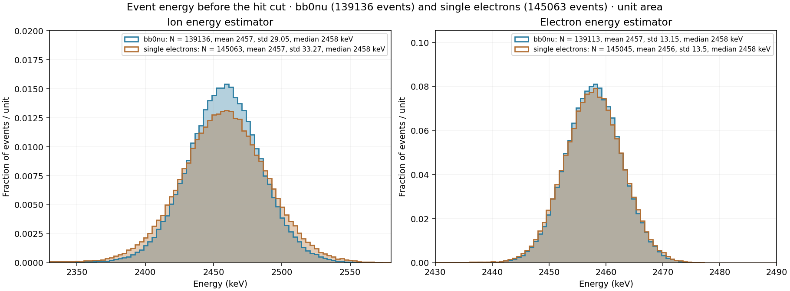

Runs bb0nu_itaca_100k_ion15 (139136 accepted events) and single_electrons_itaca_100k_ion15 (145063 accepted events), with the same selection and track settings. Reports: bb0nu · single electrons.
Events remaining after each step, applied in this order. The first three steps use the Monte Carlo truth and are common to both tracks. The ROI is one FWHM of the bb0nu electron-energy peak around Qbb. The E₂ threshold keeps 80% of the bb0nu events that reach that step.
| Step | bb0nu | single electrons | ||||
|---|---|---|---|---|---|---|
| Events | Of previous step | Of first step | Events | Of previous step | Of first step | |
| Generated | 210000 | 100.00% | 250000 | 100.00% | ||
| Energy deposited in the gas inside the Geant4 window | 176358 | 84.0% | 83.98% | 193268 | 77.3% | 77.31% |
| Fiducial: track inside the detector, 50 mm from the EL, not larger than the frame; frame inside the detector | 166639 | 94.5% | 79.35% | 182392 | 94.4% | 72.96% |
| Gamma veto: no gamma deposit above the cut outside the frame | 139136 | 83.5% | 66.26% | 145063 | 79.5% | 58.03% |
| ROI cut: electron energy within 2452.0–2463.6 keV | 104452 | 75.1% | 49.74% | 106670 | 73.5% | 42.67% |
| Track selection (itrack): no detached deposit; one segment, or up to three joined | 74214 | 71.1% | 35.34% | 74439 | 69.8% | 29.78% |
| E₂ > 135 keV (itrack) | 59371 | 80.0% | 28.27% | 5057 | 6.8% | 2.02% |
| Step | bb0nu | single electrons | ||||
|---|---|---|---|---|---|---|
| Events | Of previous step | Of first step | Events | Of previous step | Of first step | |
| Generated | 210000 | 100.00% | 250000 | 100.00% | ||
| Energy deposited in the gas inside the Geant4 window | 176358 | 84.0% | 83.98% | 193268 | 77.3% | 77.31% |
| Fiducial: track inside the detector, 50 mm from the EL, not larger than the frame; frame inside the detector | 166639 | 94.5% | 79.35% | 182392 | 94.4% | 72.96% |
| Gamma veto: no gamma deposit above the cut outside the frame | 139136 | 83.5% | 66.26% | 145063 | 79.5% | 58.03% |
| ROI cut: electron energy within 2452.0–2463.6 keV | 104452 | 75.1% | 49.74% | 106670 | 73.5% | 42.67% |
| One component in the etrack | 84209 | 80.6% | 40.10% | 85681 | 80.3% | 34.27% |
| E₂ > 157 keV (etrack) | 67367 | 80.0% | 32.08% | 11721 | 13.7% | 4.69% |
The same ROI events analysed with each track: its track selection, then the cut on its E₂ at 80% signal efficiency. S/√B is the fraction of bb0nu kept divided by the square root of the fraction of single electrons kept. With both steps, reading the itrack keeps 0.88 of the signal and 0.43 of the background of the etrack: S/√B is 1.34 times that of the etrack.
| Track | Track selection | E₂ cut, of the selected | Both, of the ROI events | ||||||
|---|---|---|---|---|---|---|---|---|---|
| bb0nu | single electrons | S/√B | bb0nu | single electrons | S/√B | bb0nu | single electrons | S/√B | |
| itrack | 71.1% | 69.8% | 0.85 | 80.0% | 6.8 ± 0.1% | 3.07 | 56.8% | 4.74% (5057 events) | 2.61 |
| etrack | 80.6% | 80.3% | 0.90 | 80.0% | 13.7 ± 0.1% | 2.16 | 64.5% | 10.99% (11721 events) | 1.95 |
An event is kept when E₂ of the main track exceeds a threshold. The curves give the fraction of each sample kept as the threshold varies; the area under the curve is 0.5 for no separation and 1 for complete separation. Areas with all accepted events: itrack 0.939; etrack 0.897. Errors are binomial.

| Track | bb0nu accepted | E₂ threshold (keV) | single electrons accepted | Ratio |
|---|---|---|---|---|
| itrack | 90.0% | 90 | 13.6 ± 0.1% | 6.61 |
| itrack | 80.0% | 132 | 6.9 ± 0.1% | 11.66 |
| itrack | 70.0% | 181 | 4.2 ± 0.1% | 16.71 |
| itrack | 60.0% | 232 | 2.9 ± 0.0% | 20.84 |
| itrack | 50.0% | 266 | 2.2 ± 0.0% | 22.85 |
| etrack | 90.0% | 119 | 27.6 ± 0.1% | 3.26 |
| etrack | 80.0% | 156 | 13.7 ± 0.1% | 5.82 |
| etrack | 70.0% | 190 | 8.0 ± 0.1% | 8.75 |
| etrack | 60.0% | 224 | 5.1 ± 0.1% | 11.74 |
| etrack | 50.0% | 261 | 3.3 ± 0.0% | 14.93 |
Fraction of the accepted events in this set: itrack: 53.3% of bb0nu and 51.3% of single electrons; etrack: 60.5% of bb0nu and 59.1% of single electrons. The efficiencies below are relative to those events.
| Track | bb0nu accepted | E₂ threshold (keV) | single electrons accepted | Ratio |
|---|---|---|---|---|
| itrack | 90.0% | 94 | 13.0 ± 0.1% | 6.95 |
| itrack | 80.0% | 135 | 6.8 ± 0.1% | 11.78 |
| itrack | 70.0% | 185 | 4.3 ± 0.1% | 16.35 |
| itrack | 60.0% | 236 | 3.0 ± 0.1% | 19.87 |
| itrack | 50.0% | 269 | 2.3 ± 0.1% | 21.50 |
| etrack | 90.0% | 120 | 27.2 ± 0.2% | 3.30 |
| etrack | 80.0% | 157 | 13.7 ± 0.1% | 5.85 |
| etrack | 70.0% | 191 | 8.1 ± 0.1% | 8.64 |
| etrack | 60.0% | 226 | 5.2 ± 0.1% | 11.53 |
| etrack | 50.0% | 262 | 3.5 ± 0.1% | 14.33 |



Numerical results: comparison.h5.